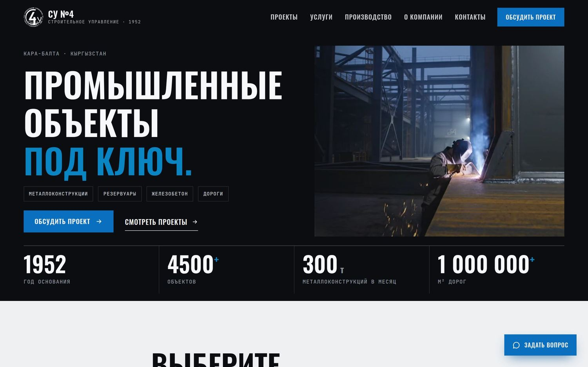
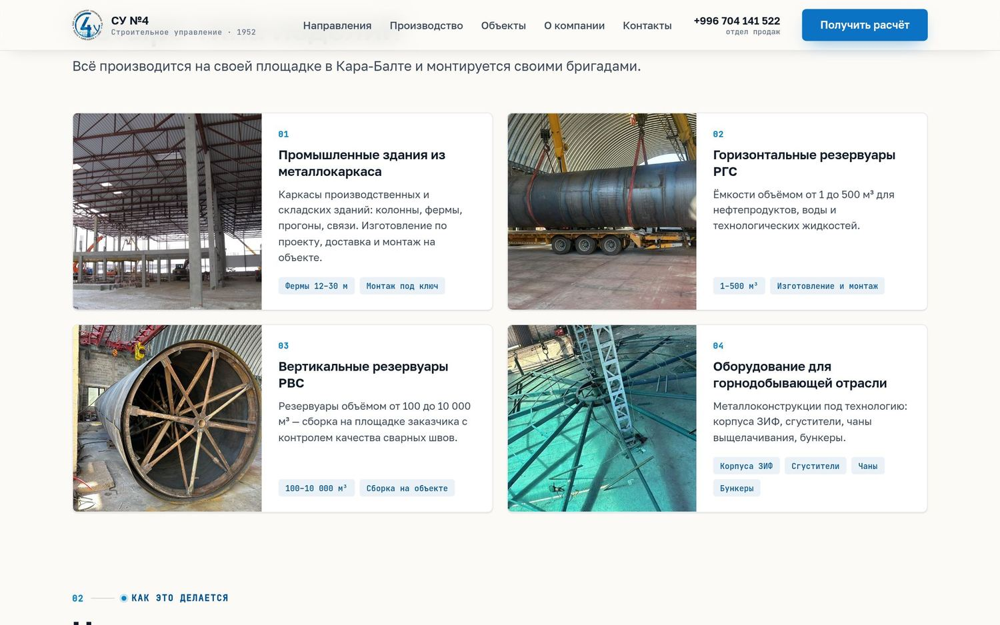

Наследие и масштаб
Второй вариант дизайна сайта ЗАО «Строительное управление №4». Тот же контент, фотографии и контакты — другая подача: светлая, спокойная, с опорой на факты и 74 года истории.
Листайте вниз или стрелками
Второй вариант дизайна сайта ЗАО «Строительное управление №4». Тот же контент, фотографии и контакты — другая подача: светлая, спокойная, с опорой на факты и 74 года истории.


Главная · десктоп 1440 px

Главная · блок «Направления»

Главная · объекты с фильтром
Металлоконструкции и резервуары, склады и промышленные здания, ангары и хранилища, дороги, бетон и ЖБИ, проектирование.

Шапка направления: параметры сразу под заголовком

Состав направления: что именно изготавливается
Проверено на ширинах от 360 px. Первый экран умещается целиком вместе с кнопкой действия, связь доступна с любого места страницы.

Первый экран

Меню с кнопками связи

Страница направления